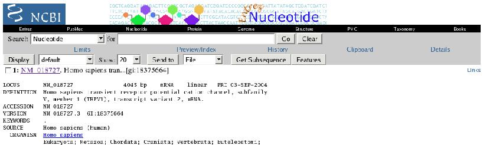

Abstract: These exercises are designed to introduce you to the basics of working with sequences on computers in general, and to some of the general paradigms employed by the European Molecular Biology Open Software Suite (EMBOSS). EMBOSS is a free Open Source software analysis package for molecular biologists. It provides a comprehensive set of sequence analysis programs (more than 150).
EMBOSS Documentation is available online.
The standard way of using EMBOSS is via command line interaction on a UNIX computer system. You will be using EMBOSS on the system hatch.health.unm.edu and you should have received login information for xxx when you signed up for Biomed505. In addition to the command line interface, there are also several graphical interfaces to EMBOSS. One of these is
EMBOSS-GUI, a web-based front end to EMBOSS. The exercises for the "Introduction to Sequence Analysis" section of Biomed505 are written for users of the command line interface. You may use EMBOSS-GUI if you prefer, however there are no detailed instructions to help you. A brief
introduction to EMBOSS-GUI is available. For the most part, the input to the command line programs is exactly mirrored by EMBOSS-GUI's web browser forms and the use of EMBOSS-GUI should be fairly straight forward.
Questions you should answer as you work through the exercises are indicated by
Question: tags, which also serve as hyperlinks to the corresponding answers (where available).
Typographical conventions:
Regular web links look
like this
Input that you should enter verbatim in web page forms, or links/buttons you should click on web pages look
like this
Sections representing command-line interaction are represented as in the following example:
[unix]# ls foo [Enter]
ls: foo: No such file or directory
where...
the unix propmt is represented as:
[unix]# ,
characters in
this font are commands to be typed into the computer verbatim,
characters in
this font are names or identifiers (Eg. file/directory names or sequence accession numbers),
words in square brackets:
[Ctrl] indicate a key to be pressed, and
program output is represented in
this font
The above example means "at the UNIX prompt, type ls followed by foo (a directory name,
which may be different in your case), then press Enter". The ouput of the command is supposed to be "ls: foo: No such file or directory". Output will often be truncated and this will be indicated using three horizontal or vertical dots.
| The EMBOSS command-line |
| NB. In order to use EMBOSS, you must first login to hatch.health.unm.edu using the username/password assigned to you when you registered for Biomed505. |
| When EMBOSS has been properly set up on a system, you can type the name of any EMBOSS program at the UNIX prompt in order to run the program. What you type is called the command-line. Any required information that you have not already given on the command-line will be prompted for. The examples in these exercises give all required input on the command-line.
The EMBOSS command syntax follows normal UNIX conventions (options start with a '-').
To get some help on a program's options:
[unix]# programname -help [Enter]
To get the full help on an EMBOSS program:
[unix]# tfm programname [Enter]
You can also get the full help on all of the EMBOSS applications here.
|
| Common themes in EMBOSS |
Most EMBOSS programs share some common behavior. They all understand the same input sequence identifiers, sequence formats and output report formats. Below are descriptions of some of the common themes in EMBOSS.
If you are not familiar with biological sequences, sequence files and sequence formats, make sure you read the Introduction to Sequence Files and Formats background reading article in the course materials. |
| 1. EMBOSS' Uniform Sequence Address (USA) |
The Uniform Sequence Address, or USA, is a standard way of specifying a sequence to be read into an EMBOSS program. Sequences can be in databases or in files. USAs can specify a single sequence or many sequences. In general, a USA specifies:
- a sequence format
- a file or database containing the sequence
- an identifier/accession number for the sequence
Of these, only the 'file or database' part is required. If the 'entry' part is omitted, then all of the entries in the file or database are read in.
Below are some examples of the USA syntax. The first two are the most common.
- database:accession: nt:X65923
- filename: myfile.fa
- format::filename: gb:myfile.gb
- @listfile: a file of USAs and/or file-names
|
| 2. Sequence formats |
| As we've just seen, you can specify a sequence format by giving the format name with two colons followed by the rest of the USA. For example: gb::myfile.gb. A format is not required, however. When reading in a sequence, EMBOSS will guess the sequence format by trying all known formats until one succeeds. EMBOSS is able to recognize sequences in at least 30 different input formats. When writing out a sequence, EMBOSS will use FASTA format by default.
|
| 3. Report formats |
The output from many EMBOSS commands is a report containing the results of a given analysis. All EMBOSS commands that produce reports have a default report format, but many of these programs allow you to change the report format used by using the -rformat name command-line option, where 'name' is the name of one of the standard report formats. Some of the more commonly used EMBOSS report formats are summarized in the following table (with links to examples):
| Name | Description |
| embl |
Writes a report in EMBL feature table format |
| genbank |
Writes a report in Genbank feature table format |
| gff |
Writes a report in GFF feature table format |
| swiss |
Writes a report in SwissProt feature table format |
| listfile |
This writes out a list file with the start and end points of the motifs
given by '[start:end]' after the sequence's full USA. This is
useful as it is a true List File that can be read in by
other EMBOSS programs using '@' or 'list::' before the filename.
|
| dbmotif |
Writes a report in DbMotif format
Format:
Length = [length]
Start = position [start] of sequence
End = position [end] of sequence
... other tags ...
[sequence]
[start and end numbered below sequence with '|' marks]
Blank line
Data reported: Length, Start, End, Sequence (5 bases around feature)
|
| excel |
This is a TAB-delimited table format suitable for reading into spread-sheet programs such as Excel.
Name, start, end and score are always reported. Other tags in the
report definition are added as extra columns. All values are (for now)
unquoted. Missing values are reported as '.'
|
Another useful command-line option related to reports is -rusashow which will identify sequences by their full USA in the report.
|
| Retrieving Sequences Using EMBOSS |
| This section describes how to use EMBOSS to read sequences from local data sources. You will retrieve the mRNA sequence for the human capsaicin receptor and save it to a file. |
| 1. Use showdb to see what EMBOSS databases are available |
| EMBOSS programs can read sequences from local sequence databases provided the sequence is referred to in the form database:seqid. This format is known as a USA (Uniform Sequence Address). In order to see what local databases are set up, use the showdb command:
[unix]# showdb [Enter]
Displays information on the currently available databases
# Name Type ID Qry All Comment
# ==== ==== == === === =======
drosophprot P OK OK OK NCBI Drosophila protein database
ecoliprot P OK OK OK NCBI E. coli protein database
nr P OK OK OK NCBI non-redundant protein database
pdb P OK OK OK Protein sequences for PDB protein structures
prefseq P OK OK OK RefSeq human, mouse and rat proteins
sp P OK OK OK SWISS-PROT release 44.0
yeastprot P OK OK OK NCBI yeast protein database
drosoph N OK OK OK NCBI Drosophila nucleotide database
ecoli N OK OK OK NCBI E. coli nucleotide database
nt N OK OK OK NCBI non-redundant nucleotide database
rrefseq N OK OK OK RefSeq human, mouse and rat mRNAs
vector N OK OK OK NCBI vector sequence database
yeast N OK OK OK NCBI yeast nucleotide database
This output shows that the EMBOSS administrator has set up 13 databases and gives some information about each of them. Since we are after a RefSeq mRNA sequence, we will use the rrefseq database.
|
| 2. Use seqret to retrieve a sequence |
| seqret reads in a sequence, and writes it out. It is probably the most commonly used EMBOSS program. Execute the following command:
[unix]# seqret rrefseq:NM_018727 -outseq NM_018727.fa [Enter]
In this command, rrefseq:NM_018727 is the USA identifying the human capsaicin receptor mRNA sequence. Executing the command will save the sequence to a file named NM_018727.fa in your current working directory. Examine the contents of the file:
[unix]# cat NM_018727.fa [Enter]
>NM_018727 NM_018727.3 Homo sapiens transient receptor potential cation channel ...
gcccgggaccccacggaggcggggagaccactcttctcccacacgagcccagctctccct
tcgagtagcaaccgccttcaagctcacaagcacccgtgggcctggggtgtgcctgcgtct
agctggttgcacactgggccacagaggatccagcaaggatgaagaaatggagcagcacag
.
.
.
cttccttacgatcaatcacagtctccagaagatcagctcaattgctgtgcaggttaaaac
tacagaaccacatcccaaaggtacctggtaagaatgtttgaaagatcttccatttctagg
aaccccagtcctgcttctccgcaatggcacatgcttccactccatccatactggcatcct
caaataaacagatatgtatacatat
|
| 3. Alternate sequence formats |
| In steps 2 and 3, you should have noted that EMBOSS' default output format is FASTA. You can tell seqret to use a different output format. In fact, there are a couple of ways to do this. Each of the following commands will save the sequence in GenBank format:
[unix]# seqret rrefseq:NM_018727 -outseq genbank::NM_018727.gb [Enter]
[unix]# seqret rrefseq:NM_018727 -osformat genbank -outseq NM_018727.gb [Enter]
Examine the contents of the GenBank format file:
[unix]# cat NM_018727.gb [Enter]
LOCUS NM_018727
DEFINITION Homo sapiens transient receptor potential cation channel, subfamily V ...
ACCESSION NM_018727
VERSION NM_018727.3 GI:18375664
KEYWORDS .
SOURCE Homo sapiens.
ORGANISM Homo sapiens
Eukaryota; Metazoa; Chordata; Craniata; Vertebrata; Euteleostomi;
Mammalia; Eutheria; Primates; Catarrhini; Hominidae; Homo.
BASE COUNT 879 a 1157 c 1078 g 931 t
ORIGIN
1 gcccgggacc ccacggaggc ggggagacca ctcttctccc acacgagccc agctctccct
61 tcgagtagca accgccttca agctcacaag cacccgtggg cctggggtgt gcctgcgtct
.
.
.
3781 gaggctgtcc cactcccagc tctggcagaa tcaagctgtt gcagcagtgc cttcttcatc
3841 cttccttacg atcaatcaca gtctccagaa gatcagctca attgctgtgc aggttaaaac
3901 tacagaacca catcccaaag gtacctggta agaatgtttg aaagatcttc catttctagg
3961 aaccccagtc ctgcttctcc gcaatggcac atgcttccac tccatccata ctggcatcct
4021 caaataaaca gatatgtata catat
//
|
| Retrieving Sequences Using ENTREZ |
| This section describes how to use ENTREZ to retrieve sequences. In the previous set of exercises, you were introduced to the ENTREZ data retrieval system. ENTREZ can be used to retrieve nucleic acid and protein sequences and save them to files on your local computer. This is the method of sequence retrieval you should use if you are planning on using EMBOSS-GUI to do the exercises. NB. In order to use sequence files retrieved via ENTREZ with the EMBOSS command-line programs, you must save the files on the same computer system where you will be running EMBOSS (ie. your web browser must be running on hatch.health.unm.edu, or you must transfer the files from your web browser computer to xxx.health.unm.edu). |
| 1. Use ENTREZ to retrieve a sequence |
| Go to the ENTREZ Nucleotide database search page and look for the query form at the top of the page:
Enter NM_018727[ACCN] in the search box, and then click the GO button. This will take you to a results summary page. Click the NM_018727 link.
This will take you to the detailed view of entry NM_018727, the top of which will look like this:

Make sure the File option is selected from the drop-down list next to the "Send to" button (this is the default) and then click on the Send to button. You will be presented with a "Save As" dialog box. Use this to save the file as NM_018727.entrez.gb to an appropriate location on your computer. |
| 2. Examine the contents of the file |
|
[unix]# cat NM_018727.entrez.gb [Enter]
LOCUS NM_018727 4045 bp mRNA linear PRI 23-AUG-2004
DEFINITION Homo sapiens transient receptor potential cation channel, subfamily
V, member 1 (TRPV1), transcript variant 2, mRNA.
ACCESSION NM_018727
VERSION NM_018727.3 GI:18375664
KEYWORDS .
SOURCE Homo sapiens (human)
ORGANISM Homo sapiens
Eukaryota; Metazoa; Chordata; Craniata; Vertebrata; Euteleostomi;
Mammalia; Eutheria; Primates; Catarrhini; Hominidae; Homo.
.
.
.
3601 ccttctttga ttttatatta ttaggagcaa aagtaaatga agcccaggaa aacacctttg
3661 ggaacaaact cttcctttga tggaaaatgc agaggccctt cctctctgtg ccgtgcttgc
3721 tcctcttacc tgcccgggtg gtttgggggt gttggtgttt cctccctgga gaagatgggg
3781 gaggctgtcc cactcccagc tctggcagaa tcaagctgtt gcagcagtgc cttcttcatc
3841 cttccttacg atcaatcaca gtctccagaa gatcagctca attgctgtgc aggttaaaac
3901 tacagaacca catcccaaag gtacctggta agaatgtttg aaagatcttc catttctagg
3961 aaccccagtc ctgcttctcc gcaatggcac atgcttccac tccatccata ctggcatcct
4021 caaataaaca gatatgtata catat
//
|
| 3. Use EMBOSS to read in the sequence from the file |
| In step 2, you should have noted that ENTREZ's default output format is GenBank. Execute the following command to write the sequence out in FASTA format:
[unix]# seqret NM_018727.entrez.gb -outseq fasta::NM_018727.entrez.fa [Enter]
|
| Using EMBOSS To Get Information About Sequences |
| 1. Use the infoseq program |
infoseq is a utility that lists a sequences' USA, name, accession number, type (nucleic or protein), length, percentage G+C (for nucleic acids), and/or description. View this information for the capsaicin receptor cDNA sequence:
[unix]# infoseq rrefseq:NM_018727 [Enter]
Displays some simple information about sequences
# USA Name Accession Type Length %GC Description
rrefseq-id:NM_018727 NM_018727 NM_018727 N 4045 55.25 Homo sapiens transient
receptor potential cation channel, subfamily V, ...
|
| 2. Use the entret program to retrieve sequence annotations |
| Sequence databases often do not just contain sequences, they may also contain a great deal of information (annotations and features) associated with the sequence. By default seqret does not return all of this associated data. Use entret to retrieve the full sequence entry including annotations:
[unix]# entret rrefseq:NM_018727 -outfile NM_018727.entret [Enter]
[unix]# more NM_018727.entret [Enter] [space] [space]
With the more command, continue hitting [space] to page through the output. Note that entret returns the sequence in it's original database form. Certain formats (e.g. FASTA) do not allow for the storage of annotation and feature data.
|
| 3. Use the showfeat program to view a simple graphical overview of the features associated with a sequence |
[unix]# showfeat rrefseq:NM_018727 -outfile NM_018727.showfeat [Enter]
[unix]# cat NM_018727.showfeat [Enter]
NM_018727
Homo sapiens transient receptor potential cation channel, subfamily V, member 1
(TRPV1), transcript variant 2, mRNA.
|==========================================================| 4045
|----------------------------------------------------------> gene
> misc_feature
|----------------------------------------------------------> source
|------------------------------------> CDS
|------------------------------------> misc_feature
|---------> misc_feature
|------> misc_feature
> variation
|--------> misc_feature
> variation
> polyA_signal
> polyA_site
| variation
| variation
| variation
|
| Working with Multiple Sequences in EMBOSS |
| EMBOSS programs can deal with multiple sequences. This section demonstrates various ways to achieve this. |
| 1. Use the infoseq program to get information about multiple sequences |
To retrieve information about all the OPSD sequences in SwissProt, execute the following command:
[unix]# infoseq "sp:OPSD*" [Enter]
Displays some simple information about sequences
# USA Name Accession Type Length Description
sp-id:OPSD_ABYKO OPSD_ABYKO O42294 P 289 Rhodopsin (Fragment).
sp-id:OPSD_ALLMI OPSD_ALLMI P52202 P 352 Rhodopsin.
sp-id:OPSD_AMBTI OPSD_AMBTI Q90245 P 354 Rhodopsin.
sp-id:OPSD_ANGAN OPSD_ANGAN Q90214 P 352 Rhodopsin, deep-sea form.
sp-id:OPSD_ANOCA OPSD_ANOCA P41591 P 352 Rhodopsin.
.
.
.
sp-id:OPSD_TRIMA OPSD_TRIMA O62796 P 348 Rhodopsin.
sp-id:OPSD_TURTR OPSD_TURTR O62798 P 348 Rhodopsin.
sp-id:OPSD_XENLA OPSD_XENLA P29403 P 354 Rhodopsin.
sp-id:OPSD_ZEUFA OPSD_ZEUFA O42604 P 354 Rhodopsin.
sp-id:OPSD_ZOSOP OPSD_ZOSOP Q9YGY9 P 352 Rhodopsin.
Note that on the command line, you must enclose the wildcard character (*) in quotation marks.
Question: How would you retrieve all of these sequences into a single FASTA format file?
|
| 2. Use a list file. |
| You will need to save
this file to use as input for this exercise. |
To retrieve information about all the sequences identified in the file, execute the following command:
[unix]# infoseq @NPYRY1.list [Enter]
Displays some simple information about sequences
# USA Name Accession Type Length Description
sp-id:NY1R_HUMAN NY1R_HUMAN P25929 P 384 Neuropeptide Y receptor type 1 (NPY1-R).
sp-id:NY1R_PIG NY1R_PIG O02835 P 383 Neuropeptide Y receptor type 1 (NPY1-R).
sp-id:NY1R_CANFA NY1R_CANFA O02813 P 382 Neuropeptide Y receptor type 1 (NPY1-R).
sp-id:NY1R_CAVPO NY1R_CAVPO Q9WVD0 P 383 Neuropeptide Y receptor type 1 (NPY1-R).
sp-id:NY1R_MOUSE NY1R_MOUSE Q04573 P 382 Neuropeptide Y receptor type 1 (NPY1-R).
sp-id:NY1R_RAT NY1R_RAT P21555 P 382 Neuropeptide Y receptor type 1 (NPY1-R) (FC5).
sp-id:NY1R_XENLA NY1R_XENLA P34992 P 366 Neuropeptide Y receptor type 1 (NPY1-R).
In the command above, the @ in front of the file name is the way you tell EMBOSS that this file is a List File, not a regular sequence file.
|